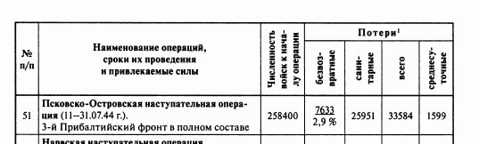
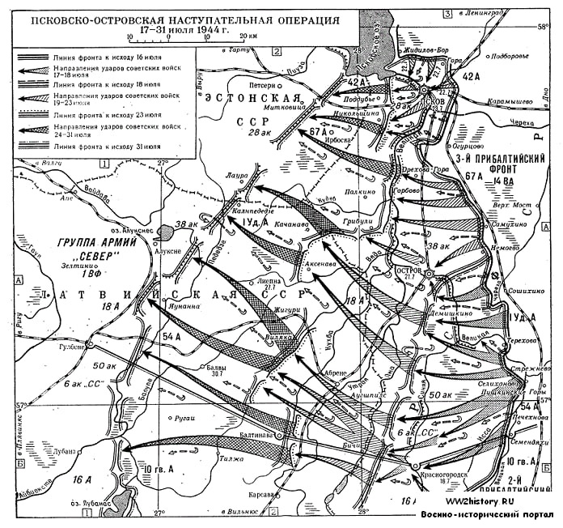
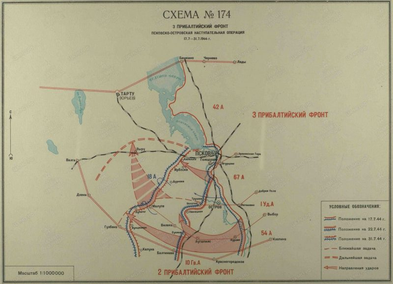
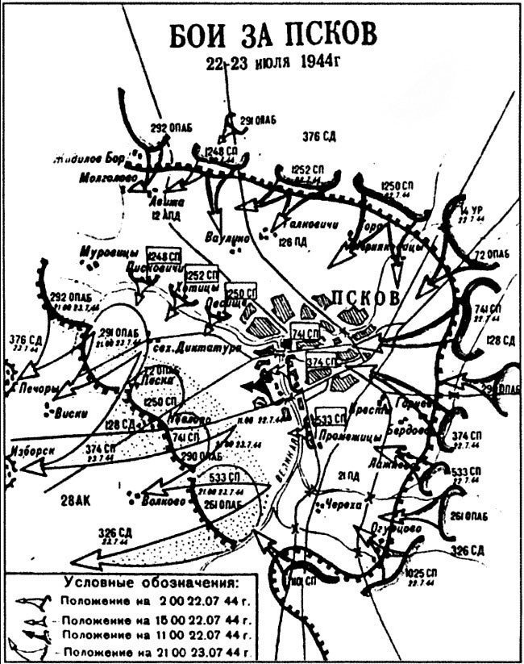

Итоги операции и схемы
В ходе Псковско-Островской операции наши потери составили

[4]Потери немецких войск в этой операции часто в отечественных источниках указываются 60 тысяч убитыми и около 5 тысяч пленными. Однако, здесь берется период с 17 июля по 6 сентября 1944 года, то есть, охватывает ряд последующих воинских операций. Таким образом, пока немецкие потери в Псковско-Островской операции остаются неизвестными.
Древний город Псков был сильно разрушен, до войны в нём проживало 62 тысячи жителей, освободителей встречало 143 человека.
В целом итоги Псковско-Островской операции:
1. Выбор направления главного удара себя вполне оправдал: выполняя приказ Ставки Верховного Главнокомандования, войска 3 ПБФ прорвали оборону противника на наиболее слабо укрепленном участке мощного оборонительного рубежа противника "Пантера" (южнее ОСТРОВ) и, развивая наступление в северо-западном направлении, обошли Псковско-Островский укрепленный район. Кроме того, наступление главной группировки войск фронта со Стрежневского плацдарма исключило необходимость форсировать р.Великая. По времени удар войск 3-м Прибалтийского фронта (17.7.44) слился с ударами соседних слева фронтов, поднимавшимися с юга на север.
2. В итоге Псковско-Островской операции войсками 3 ПБФ был ликвидирован исключительно сильный оборонительный рубеж противника "Пантера", к строительству которого немцы приступили с 1942 года. Взяты мощные узлы обороны противника Псков И Остров и была преодолена р.Великая - тем самым нашим войскам был открыт путь в Прибалтику.
За успешное проведение операции командующему фронтом Масленникову И. И. присвоено воинское звание генерал Армии, он награждён Орденом Кутузова I степени.
В целом операция была проведена успешно, хотя были и недостатки. На 1 этапе операции у советского командования не было представление, что город Остров — один из ключевых узлов сильнейшего немецкого рубежа "Пантера", чтобы понять это потребовалось 10 дней упорных боёв,хотя Василевский предупреждал об этом сразу. Но не смотря на недочёты, Войска фронта сумели разгромить Псковско-Островскую группировку противника ,продвинулись на запад от 50 до 110 км,освободили областной центр — Псков и город Остров.
Наши войска вышли в тыл Нарвской и Тортуской группировок противника полностью,полностью освободили. Ленинградскую область, способствовали наступлению 2 Прибалтийского фронта. 7 соединений, наиболее отчличившихся, получили звание Псковских, 9 соединений получили звание Островских. Советская армия успешно продолжили наступление. [5, стр. 90]
Схема 1 "Группировка противника в Прибалтике"

Схема 2 "Оборонительная рубеж немцев "Пантера""

Схема 3 "Решение командующего 3ПБФ на Псковско-Островскую операцию"

Схема 4 "Рокировка 54А на левое крыло фронта в Псковско-Островской операции"

Схема 5 "Боевой порядки и огни артиллерии 1 ударной и 54 армий артиллерии противника на 17.7.44г

Схема 6 "Тыловая обстановка Псковско-Островской операции 16-31 июня 1944г."

Схема 7 "Мероприятия по оперативной маскировке проводимые войсками 3ПБФ с 5 по 20.6.1944"

Схема 8 "Положение войск левого фланга 3ПБФ с 11 по 16.7.44"

Схема 8А "Положение сторон на 16.7.44г"

Схема 9 "Ход боевых действий войск 3ПБФ в Псковско-Островской операции с 17 по 31.7.44"

Схема 10 "Прорыв обороны противника войсками 3ПБФ на р.Великая 17-18.7.44г"

Схема 11 "Действия войск по овладению г.Остров"

Схема 12 "Боевые действия по овладению г.Псков"

Схема 13 "Боевые действия 14ВА в Псковско-Островской операции"

Схема 14 "Перемещение КП фронта и армий в период с 17 по 31.7.44г"

Псковско-Островкая наступательная операция 17-31 июля 1944г

Схема №174 3Прибалтийский фронт Псковско-Островская наступательная операция

Бои за Псков
